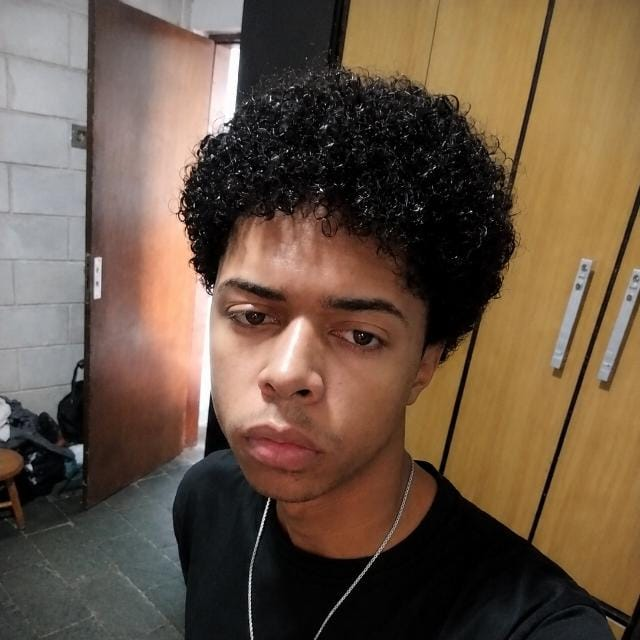
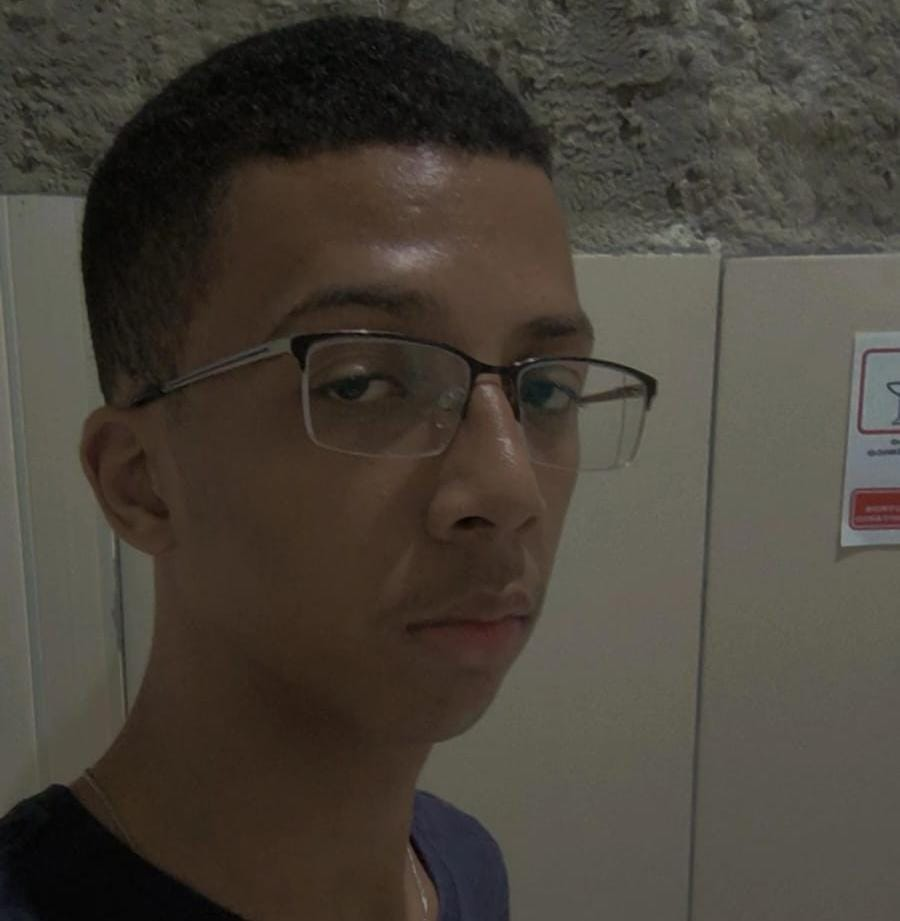
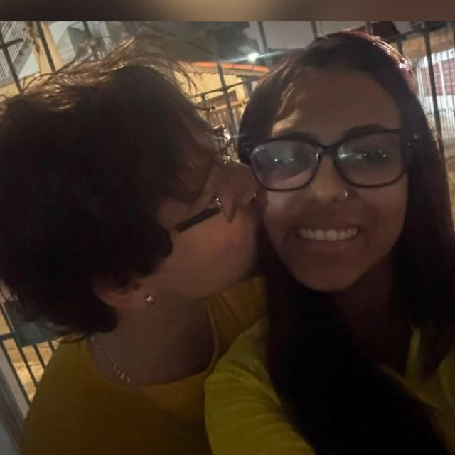
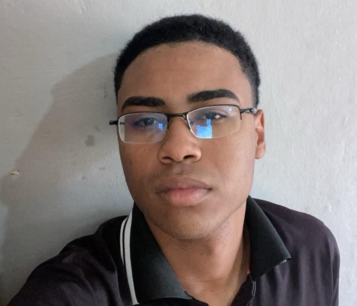
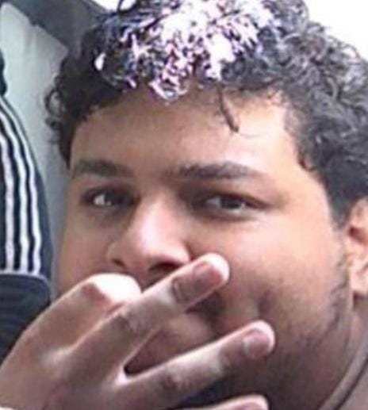
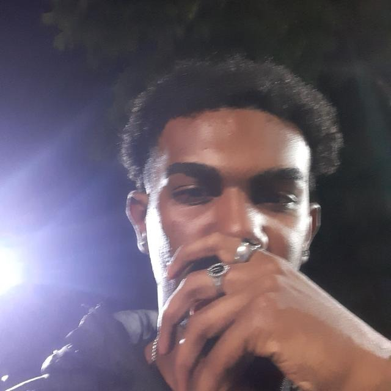

Conheça os integrantes da Equipe Danados's Tech

Estudante de Análise e Desenvolvimento de Sistemas, com foco em Desenvolvimento Front-End. Tenho interesse em criar interfaces modernas, responsivas e funcionais, buscando evoluir constantemente através de projetos práticos.
- HTML5 e CSS3- Em aprendizado
- Técnico em administração
- Análise e Desenvolvimento de Sistemas — UMC- Em andamento.
- Ensino médio com técnico integrado: Administração - Finalizado
- Criação de projetos pessoais - Desenvolvimento Front-End

Olá me chamo leonardo brito, sou estudante de Análise e desenvolvimento de sistemas (ADS) com grande foco e dedicação para me tornar um desenvolvedor focado em front-end, com foco em personalização e criação de interfaces e sites interativos altamente personalizados e reponsivos, desde ja venho me dedicando e praticando com projetos e atividades praticás para melhor adaptação no mundo de desenvolvimento de softwares.
° HTML, CSS E JAVASCRIPT: em processo
Analise e desenvolvimento de sistemas (ADS) Somente esse no momento!!!!
tenho interesse em me tornar um desenvolvedor front-end, mas tambem me tornar um fotografo nas horas vagas pois amo demonstrar minha arte atraves de uma lente de uma camera quanto na criação de um site, assim viver uma vida tranquila conquistando tudo aquilo que eu almejo com bastante esforço!!!

me chamo Humberto to cursando o segundo semestre de ADS, tenho foco na era de back-end voltada a banco, to começando a estudar power bi python e outras áreas, já fiz alguns projetos na área de tecnologia, mas não trabalho com isso atualmente, sempre trabalhei com eventos como pj e depois de um tempo demonstrei interesse por essa área.
HTML, CSS, JAVASCRIPT, SQL, PYTHON: em processo
Redes e segurança-Senac programação e lógica básica-Senac Hardware e software-Senac Análise e desenvolvimento de sistemas(ADS) AWS-(em processo) Power bi-santader(em processo)

Olá, me chamo Bruno Aparecido do Nascimento Vieira, estou cursando o segundo semestre de Análise e desenvolvimento de sistemas (ADS) com grande foco e dedicação para me tornar um desenvolvedor focado em back-end, de cibersegurança. Desde já venho me dedicando e praticando com projetos e atividades praticás para me desenvolver para o mercado.
HTML, CSS E JAVASCRIPT: em processo.
Analise e desenvolvimento de sistemas (ADS)
tenho interesse em me tornar um desenvolvedor back-and, na área de cibersegurança, nas minhas horas vagas costumo dividir meu tempo entre o desenvolvimento de novas habilidades relacionado a minha futura área, ou também passo minhas horas vagas com familiares, amigos, entre outros.

Estudante de Análise e Desenvolvimento de Sistemas na UMC, tendo como principal objetivo a área de cibersegurança. Busco absorver o máximo possível dos conteúdos abordados durante a graduação para aplicá-los em meus trabalhos e projetos.
Conhecimentos em: - HTML - CSS - Python - Redes e infraestrutura - Linux
!Danados Tech
Ainda em fase de finalização, com implementação de banco de dados. Atualmente, é o maior projeto do qual participei, envolvendo outras pessoas e reunindo conhecimentos adquiridos ao longo de todo um período de estudos.
Organização e clareza na comunicação, principalmente em trabalhos em equipe, buscando sempre uma boa colaboração entre todos para o desenvolvimento de conhecimentos, boas práticas e melhores resultados.
Análise e Desenvolvimento de Sistemas Universidade de Mogi das Cruzes — UMC Cursando
https://github.com/FelipenlStash

olá a todos me chamo Wendel da Silva Siqueira e estou cursando na universidade particular de Mogi a umc e tenho aprendizado em HTML front end e back end lógica de programação e fora o conhecimento na área da tecnologia sou operador de telemarketing na empresa neohype
informática básica,informática média
aprendizado em HTML e banco de dados: em andamento